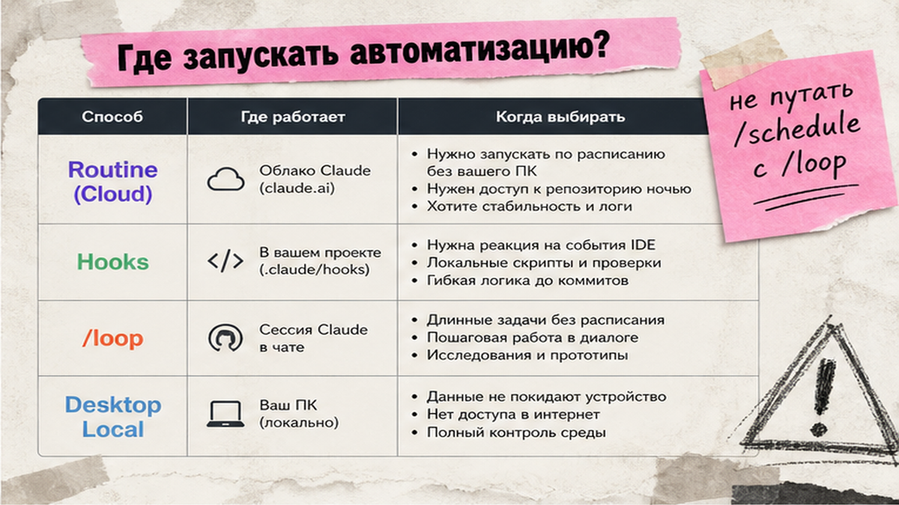
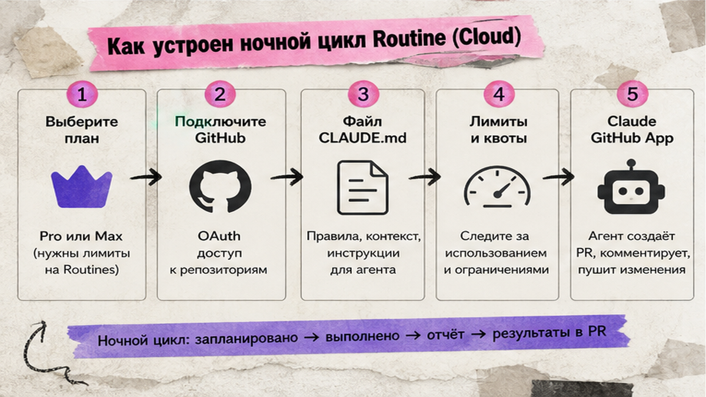
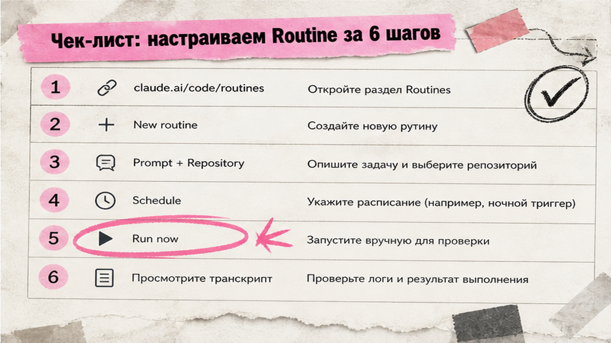

Нужно, чтобы Claude сам проверял pull request ночью или реагировал на алерт из мониторинга, пока вы спите? Claude Code Routines - это сохраненный промпт с репозиторием, который Anthropic запускает в облаке по расписанию, по API или при событии в GitHub. За 30-45 минут вы создадите первую рутину в claude.ai/code/routines, настроите триггер и проверите результат в веб-интерфейсе без постоянного ноутбука.
TL;DR / Быстрый инсайт: Routine - "облачный сотрудник с будильником": промпт + repo + триггер (Schedule, API или GitHub). Создание - claude.ai/code/routines или команда /schedule в CLI. Лимиты: Pro 5, Max 15, Team/Enterprise 25 запусков в день; one-off в cap не входят. API-триггер требует bearer-токен sk-ant-oat01- и header anthropic-beta. GitHub-триггер - только после установки Claude GitHub App, не через /web-setup.
Функция в research preview с 14 апреля 2026 года. Доступна на Pro, Max, Team и Enterprise при включенном Claude Code on the web. Routines расходуют лимит подписки как обычные сессии. Если вы только ставите Claude Code, начните с инструкции по установке Claude Code; для локальных событий CLI смотрите гайд по hooks.

Routine - автономная облачная сессия на серверах Anthropic. Hooks срабатывают локально при событиях CLI (сохранение файла, команда). Команда /loop и scheduled-tasks крутятся в вашей открытой сессии на ПК. Desktop Local task будит агента на вашей машине. GitHub Actions с claude-code-action - отдельный CI-слой, не Routine.
| Инструмент | Где работает | Когда выбирать |
|---|---|---|
| Routine (Cloud) | Облако Anthropic | Ночной review PR, triage алертов, weekly audit без ноутбука |
| Hooks | Локальный CLI | Автоформат, lint при save, pre-commit проверки |
| /loop, scheduled-tasks | Открытая CLI-сессия | Быстрый цикл в текущем проекте, пока ПК включен |
| Desktop Local task | Ваш компьютер | Задачи с локальными файлами вне облака |
Делайте: Routine для задач, которые должны идти без вашего ПК. Не делайте: путать /schedule (создает cloud Routine) с /loop (локальный цикл) - в SERP их часто смешивают.

Перед созданием проверьте план и доступ. Owner Team/Enterprise может отключить Routines в claude.ai/admin-settings/claude-code. Routines привязаны к личному claude.ai аккаунту и не шарятся с командой.
Делайте: self-contained промпт - рутина не видит ваш прошлый чат. Не делайте: рассчитывать на локальные MCP из claude mcp add - в routines нужны connectors на claude.ai (Slack, Linear и др.).

Workflow первой рутины:
Подготовка аккаунта → claude.ai/code/routines → New routine → промпт + repo + environment → trigger Schedule → Create → Run now → проверка transcript
Откройте claude.ai/code/routines (интерфейс Routines в Claude Code on the web) и нажмите New routine. Задайте имя, промпт (что сделать с кодом), выберите репозиторий и environment: Default (Trusted network) или Custom с allowlist доменов. Добавьте trigger Schedule - preset nightly или weekly. Нажмите Create, затем Run now.
Альтернатива из CLI: в сессии Claude Code выполните, например, /schedule daily Review open PRs and summarize blockers. Команда /schedule создает только scheduled routines; алиас - /routines. Управление: /schedule list, /schedule update, /schedule run. Routine должна появиться в том же web UI.
Делайте: после Create сразу Run now и откройте session transcript. Не делайте: доверять только зеленому статусу run - он означает отсутствие infra-ошибки, а не успех задачи.
Schedule - "будильник" для рутины. Presets: hourly, nightly, weekdays 9:00, weekly. Свой cron возможен, но минимальный интервал - 1 час; более частые выражения отклоняются. One-off (разовый запуск по времени) настраивайте в web UI, если CLI не дает нужный вариант.
Делайте: nightly digest PR для команды вместо hourly, чтобы не сжечь cap. Не делайте: ставить cron чаще часа - система вернет ошибку.
API trigger - "дверь с ключом": внешняя система (мониторинг, Make, n8n) шлет POST и будит рутину. В Edit routine → Add trigger → API → Generate token. Токен с префиксом sk-ant-oat01- показывается один раз - сохраните URL и secret сразу. Повторно получить нельзя, только Regenerate.
Endpoint: POST на https://api.anthropic.com/v1/claude_code/routines/{routine_id}/fire. ID в URL начинается с trig_, не routine_. Поле text в JSON опционально, до 65536 символов - передайте stack trace или контекст алерта. Каждый POST создает новую сессию; idempotency key нет.
Пример curl для API trigger:
curl -X POST "https://api.anthropic.com/v1/claude_code/routines/trig_XXXXX/fire" \
-H "Authorization: Bearer sk-ant-oat01-ВАШ_ТОКЕН" \
-H "anthropic-version: 2023-06-01" \
-H "anthropic-beta: experimental-cc-routine-2026-04-01" \
-H "Content-Type: application/json" \
-d '{"text": "Разбери stack trace и предложи draft fix PR"}'
Без header anthropic-beta: experimental-cc-routine-2026-04-01 ответ будет 400. Не путайте bearer sk-ant-oat01- с Platform API key (x-api-key) - это разные ключи. Успешный ответ 200 содержит claude_code_session_id и claude_code_session_url.
Делайте: храните token в секретах CI или vault, не в Git. Не делайте: дергать /fire в цикле без rate limit - возможен 429.
GitHub trigger срабатывает на события Pull request и Release. Фильтры: Author, Title, Base branch, Labels, Is draft и другие. Из CLI GitHub trigger доступен с v2.1.225+ при установленном Claude GitHub App.
Типовая ошибка: настроили /web-setup, но trigger молчит. Причина - App не установлен, webhooks не включены. Решение: github.com/apps/claude → Install на нужный org/repo → в UI routine выберите event pull_request.opened и фильтры, например base=main и draft=false.
События GitHub сверх hourly cap отбрасываются, не ставятся в очередь. Claude пушит изменения в ветки с префиксом claude/. Делайте: human review перед merge PR от рутины. Не делайте: auto-merge без проверки - research preview, лимиты могут меняться.
Перед продакшеном пройдите список. Отметьте каждый пункт:
Делайте: начинать с одного триггера, добавлять API или GitHub после стабильного Schedule. Не делайте: включать все connectors "на будущее".
| Рутина | Триггер | Суть промпта |
|---|---|---|
| Nightly PR digest | Schedule weekdays 9:00 | Суммировать PR за сутки, отправить в Slack connector |
| Weekly dependency audit | Schedule weekly | npm audit / diff lockfile, draft PR с фиксами |
| Docs drift | Schedule weekly | Сравнить merged PR с docs repo, PR на обновление |
| Alert triage | API + text из мониторинга | Разбор stack trace, draft fix PR |
| PR opened review | GitHub pull_request.opened, base=main, draft=false | Чек-лист security/style, inline comments |
Адаптируйте формулировки под свой стек; канонические примеры - в официальной документации. Для оркестрации API-триггера с CRM и мессенджерами логично связать Routine с Make: курс Make.com и вайбкодинг показывает, как собрать webhook → обработка → уведомление без кода.
Если нужна связка Routine + CRM + телефония под ключ, разберите процессы на обучении по Make и вайбкодингу или закажите аудит у интегратора.
Материал проверен: эксперт Елена Ковалева (Главный эксперт по SEO/GEO).
Достоверность данных: лимиты Pro 5 / Max 15 / Team 25, cron от 1 часа, beta-header и endpoint /fire сверены с документацией Anthropic на 16.08.2026; семантика запросов - по SERP fallback (Wordstat MCP недоступен в прогоне).
Откройте claude.ai/code/routines → New routine → имя, self-contained промпт, repo, environment, trigger Schedule → Create. Для schedule-only альтернатива - /schedule в CLI. После Create нажмите Run now и откройте transcript.
Hooks реагируют на локальные события CLI на вашем ПК. Routines - автономные облачные сессии с расписанием, API или GitHub. Hooks для lint при save; routines для ночного review без ноутбука.
До 5 на Pro, 15 на Max, 25 на Team и Enterprise. One-off scheduled runs в дневной cap не входят. Каждый run расходует subscription usage как обычная сессия.
1 час. Более частые cron-выражения система отклонит. Для частых событий используйте API trigger с внешним throttling, а не sub-hourly Schedule.
Чаще всего не установлен Claude GitHub App. Команда /web-setup дает доступ к clone, но не включает webhooks. Установите App на org/repo, пересохраните routine с нужным событием и фильтрами PR.
Нигде - token показывается один раз при Generate. Сохраните в vault сразу. Если потеряли, в UI routine нажмите Regenerate и обновите secret во всех интеграциях.
Да. Routines выполняются в облаке Anthropic. Нужны только активная подписка, доступ к repo и настроенный триггер. Локальный ПК для Schedule и GitHub events не требуется.